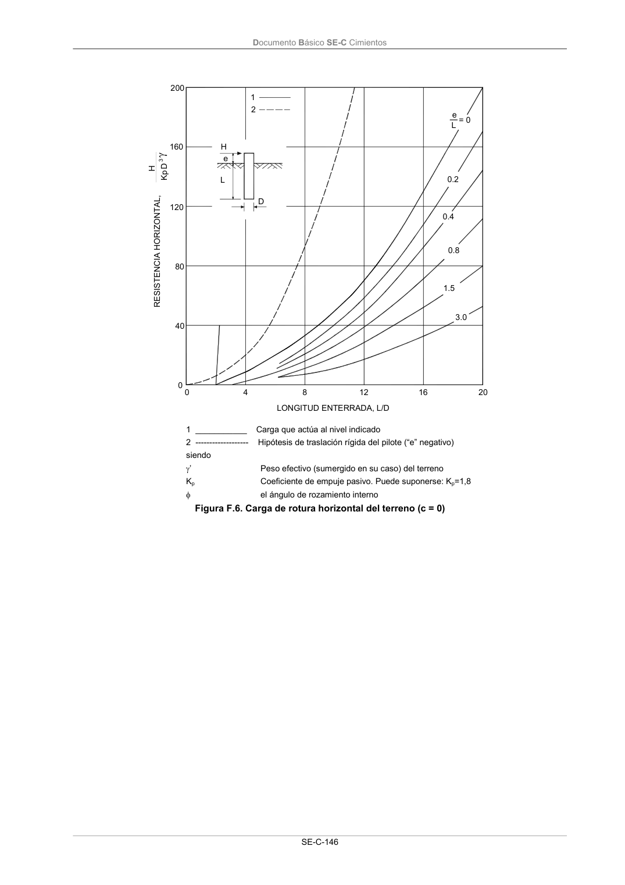

DB-SE-C Cimientos · edición 2019-12-20 · capa oficial
Documento DB-SE-C-oficial · SHA-256 del PDF a71133f4b0dca253e45ea3071c70f2a512354bcc5cd841bf89b1a502f567ac5e
Página física 151 de 165.
Copia fiel del PDF fuente · Fuente oficial
Ficha de la disposición en la fuente oficial
Formato: Texto de la página (Markdown)
Documento Básico SE-C Cimientos SE-C-146 4 0 8 12 16 20 0.2 0.4 0.8 1.5 3.0 RESISTENCIA HORIZONTAL, D Kp 3 LONGITUD ENTERRADA, L/D e L D e L = 0 200 160 120 80 40 0 1 2 H H 1 ___________ Carga que actúa al nivel indicado 2 ------------------- Hipótesis de traslación rígida del pilote (“e” negativo) siendo ’ Peso efectivo (sumergido en su caso) del terreno Kp Coeficiente de empuje pasivo. Puede suponerse: Kp=1,8 el ángulo de rozamiento interno Figura F.6. Carga de rotura horizontal del terreno (c = 0)

Datos candidatos: compruebe celdas y notas en el PDF.